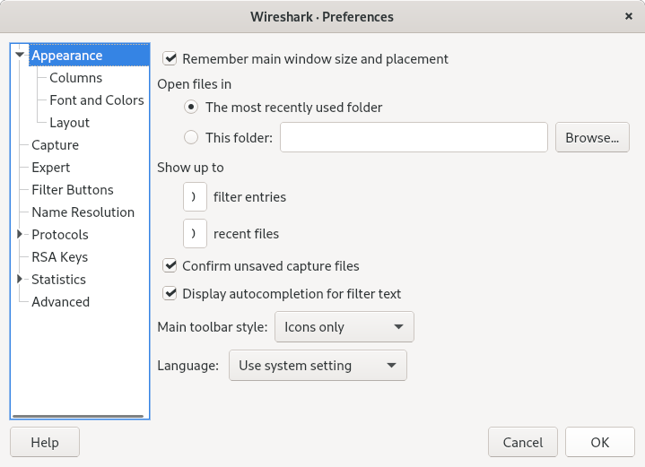
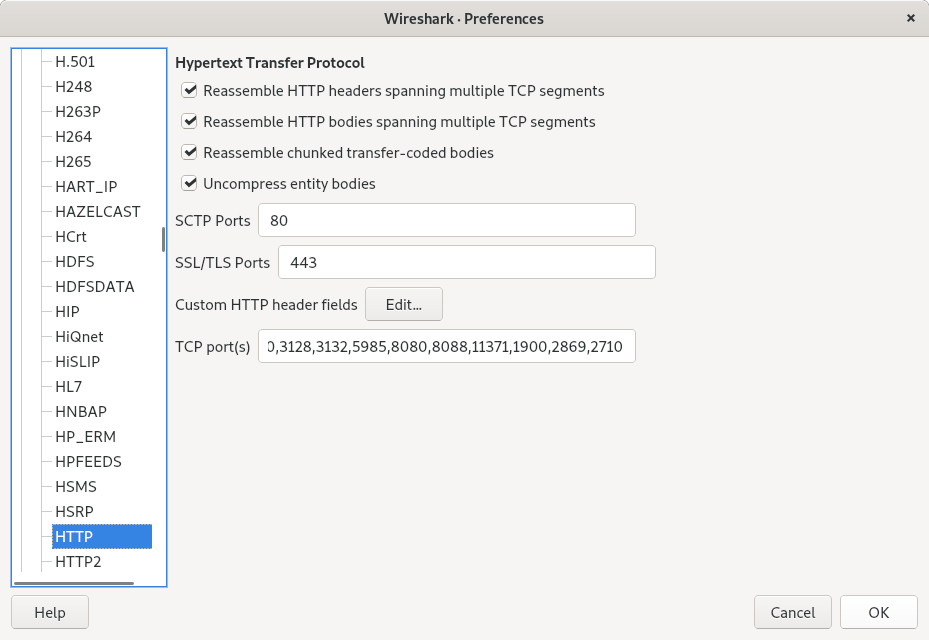
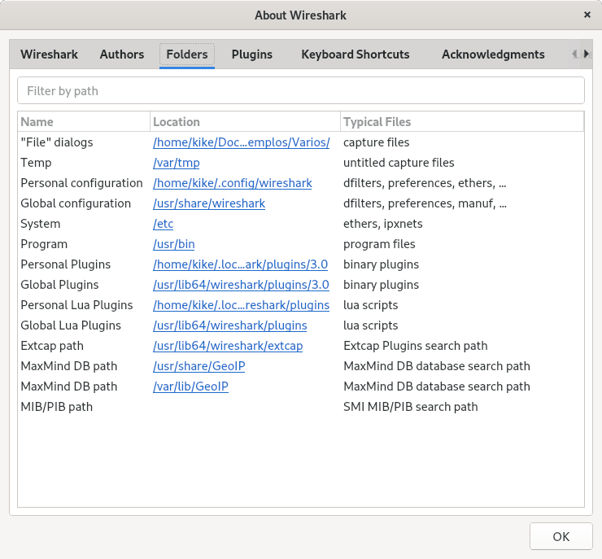
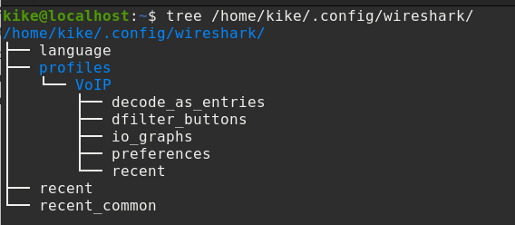

Introducción a Wireshark¶
Introducción al análisis de paquetes¶
En una red, nos podemos encontrar:
Problemas de funcionamiento y rendimiento
Problemas de seguridad
Errores de configurción
El análisis de paquetes, describe el proceso de captura e interpretación de tráfico de red, con el fin de entender qué está pasando.
Nota
Para entender el análisis de paquetes, se debe comprender exactamente como se comunican los dispositivos de una red, los fundamentos de sus protocolos de comunicación y el hardware que lo soporta todo.
¿Qué es Wireshark?¶
Wireshark, es un analizador de paquetes de red. Captura paquetes en una red de datos y muestra los datos de cada paquete lo más detalladamente posible.
Wireshark está disponible de forma gratuita, es de código abierto y es uno de los mejores analizadores de paquetes disponibles en la actualidad, puede ser instalado en varias plataformas, Windows, Mac OS y Linux
Razones para usar Wireshark
Para solucionar problemas de red
Para examinar problemas de seguridad, detectar intentos de intrusión o el uso indebido de la red por parte de usuarios
Para verificar, monitorizar y examinar aplicaciones de red
Recopilar e informar de estadísticas de la red
Para depurar implementaciones de protocolos de red
Para aprender sobre redes
Nota
El análisis de paquetes, se utiliza para interceptar y capturar datos en tiempo real de una red, con el fin de entender lo que está pasando
Uno de los aspectos clave en la detección de paquetes, es dónde colocar el analizador físicamente en la red, se debe conocer el comportamiento de los distintos dispositivos de red. Situar el analizador en el lugar correcto, puede conducir a resultados satisfactorios
Cada sesión de análisis es diferente, paero básicamente, los pasos a seguir en cada sesión
Determinar el dispositivo que queremos tracear
Detrminar qué aplicaciones se están utilizando
Filtrar la conversación que nos interes
¿Cómo trabaja?¶
Wireshark viene con las librerias libpcap/winpcap (Npcap), el cual, se encarga de configurar el interfaz de red en modo promiscúo, que nos permitirá capturar el tráfico, independientemente de que vaya dirigido o no a nuestro dispositivo. Necesitamos privilegios de administrador para capturar tráfico.
# En Linux, debemos añadir nuestro usuario al grupo de Wireshark
sudo usermod -a -G wireshark usuario
Características:
Puede abrir archivos capturados por otro software como tcpdump, windump, Oracle, etc.
Decodifica gran cantidad de protocolos y visualiza los paquetes con información detallada de cada protocolo.
Crea flujogramas de tráfico
Filtra, busca y colorea paquetes según un criterio (filtrado)
Puede guardar y exportar parte o la totalidad de la captura.
Puede crear varios tipos de estadísticas
La cantidad de recursos que necesita Wireshark, dependerá del entorno deonde esté instalado y del tamaño del archivo de captura. Una red con mucho tráfico puede producir archivos de captura de varios cientos de Mb en muy poco tiempo. Con grandes archivos de captura, los requerimientos de memoria y espacio en disco son mayores.
Disectores¶
Los disectores de paquetes, son los encargados de examinar, analizar y mostrar la información contenida en cada paquete, existe un disector por cada nivel de tráfico.
Ethernet, decodifica y muestra los campos de la cabecera ethernet y en función del contenido del campo tipo (0x0800) entrega la trama al siguiente disector (IPv4)
IPv4, decodifica los campos de la cabecera y basándose en el contenido del protocolo, entrega el paquete al siguiente disector (6, TCP)
TCP, decodifica y basándose en el contenido de los campos puerto, pasa el paquete al siguiente disector (80, HTTP)
El disector de aplicación, es el último
Hay aplicaciones que se ejecutan sobre puertos no estándar, en estos casos, wireshark no reconoce el tráfico y aplica mal los disectores. Considera los bytes tras TCP como datos e intenta averiguar, buscando patrones reconocibles (disectores heuristicos), de que tipo de tráfico se trata.
Un disector heurístico, busca patrones reconocibles en los datos para averiguar que tipo de comunicación está contenida, si no reconoce nada, devuelve una indicación de fallo a wireshark y manda los datos al siguiente decodificador heurístico, hasta que se queda sin disectores para probar.
Podemos aplcar manualmente un disector, desde Analyze -> Decode As o seleccionando el paquete mal decodificado y con click derecho, seleccionamos Decode as…
Metodologías de captura¶
Los paquetes de red pueden ser capturados a través de varias técnicas. Dependiendo del requisito, un analizador de protocolos, se sitúa un un lugar determinado de la red, con un determinado tipo de configuración.
Por mirroring (puertos SPAN). >Nos permite configurar un puerto del switch como una copia del puerto que queremos analizar, esta configuración, tiene problemas con el tráfico pesado
#(config) no monitor session 1
#(config) monitor session 1 source int fa0/1
#(config) monitor session 1 destination int gb0/1
Network TAP
Machine in the Middle (MIM), se utiza un equipo como un puente transparente (permite pasar el tráfico sin alterarlo)

# En Debian Linux
apt-get install bridge-utils
# Crear e script
#!/bin/bash
systemctl stop NetworkManager
brctl addbr br0
ifconfig enp0s20f0u1 0.0.0.0 promisc up
ifconfig eth1 0.0.0.0 promisc up
brctl addif br0 enp0s20f0u1
brctl addif br0 eth1
ip link set br0 up
systemctl start NetworkManager
Interfaz de usuario¶

El menú principal
Barra de herramientas
Herramienta de filtrado, permite a los usuariosconfigurar filtros para visualizar paquetes que cumplan ciertas condiciones
Lista de paquetes que se han capturado
Detalles del paquete seleccionado
Barra e estado, proporcionainformación detallada sobre el estado de wireshark y los datos capturados
Se puede configurar el interfaz de usuaio desde el menú Edit -> Preferences -> Appearance
Ajuste de columnas¶
Wireshark contiene un conjunto predeterminado de columnas que proporciona información básica. La adición de columnas, puede ayudar a detectar patrones de comportamiento
Podemos configurar y ajustar las columnas que tenemos en el panel de lista de paquetes, añadiendo o eliminando columnas. Estas, se pueden añadir desde Edit -> Preferences -> Appearance -> Columns o seleccionando el campo deseado desde la vista de detalle del paquete y con el botón derecho, seleccionar Apply as column
Desde la vista de paquetes, podemos gestionar las columnas:
Borrar
Ocultar
Ordenar
Alinear
Editar
Nota
La adición de columnas y su clasificación, son dos tareas fundamentales, que pueden mejorar el tiempo de análisis
Las clumnas que están ocultas, también son procesadas por Wireshark cuando se aplica un filtro o cuando se abre un archivo, así que cuando hay muchas columnas (aunque estén ocultas), Wireshark se volverá más lento.
Ajuste de diseño¶
Desde Edit -> Preferences -> Appearance -> Layout, podemos seleccionar la visualización y situación de los paneles en la pantalla principal (Packet List, Packet Details y Packet Bytes)
Personalizando Wireshark¶
Desde Edit -> Preferences, podemos ajustar parámetros generales de Wireshark.
Situando el cursor en cada parámetro de opción, nos aparecerá una pantalla emergente con un texto de ayuda
Capture¶
En las preferencias de captura, podemos elegir varias opciones para las interfaces disponibles, por defecto, está marcado
Capturar paquetes en modo promiscuo, si queremos capturar todo el tráfico que circula por la red
Capturar paquetes en formato pcapng (formato netx generation)
Actualizar la lista de paquetes en tiempo real
Hacer scroll automático en captura
Filter Buttons¶
Nos permite gestionar filtros a medida y situarlos como un botón en la barra de filtrado para un acceso más rápido.
Name Resolution¶
La resolución de nombres, intenta resolver algunos valores numéricos a su equivalente nombre, puede resolverlo llamando a los servicios de sistema o bien, utilizando archivos de configuración de Wireshark.
Inconvenientes:
La resolución puede fallar, o bien porque los servidores de nombres son desconocidos o no estan disponibles o no se encuentra an los archivos de configuración nde Wireshark
Los nombres resueltos no se almacenan en el archivo de captura.
DNS agrega tráfico adicional al archivo de captura
La resolución de la dirección MAC, puede resolver:
A su dirección IP mediante la resolución ARP
A un nombre de dispositivo conocido, si existe un archivo de conversión mac a nombre de dispositivo
Códigos del fabricante, convirtiendo los tres primeros octetos
Resolución dirección IP
Resolución DNS, Wireshark utilizará /etc/hosts o el resolutor de nombres para convertir una dirección IP al nombre de host asociado
Resolve Transport Name
Resolución del puerto TCP/UDP, Wireshark, le pedirá al sistema operativo, que convierta un puerto TCP o UDP a su nombre copnocido
Para obtener un nombre descriptivo para una ID de etiqueta VLAN, se puede usar un archivo vlans.
Protocolos¶
Podemos configurar el comportamiento del análisis sobre cada protocolo sobre parámetros que son editables.
Nota
También podemos acceder a las preferencias del protocolo, seleccionando un paquete de ese protocolo en el panel de listado de paquetes, y con el botón derecho del ratón, seleccionamos Protocol Preferences
Cuando se utiliza un número de puerto no estándar en un protocolo conocido, se puede agregar ese puerto a la configuración de preferencias de ese protocolo (no todas las preferencias de protocolo son configurables)
Perfiles¶
Hay ciertas caracteristicas de personalización que se ajustan a tareas concretas. Los perfiles, son como entornos personalizados que pueden ahorrar una cantidad significativa de tienpo al auditar una red.
Los perfiles, son un conjunto de archivos de texto simples, que definen los ajustes de preferencias, filtros de captura, filtros de visualización, reglas de colreado, etc, que se ajustan y le brindan un escenario específico para cada caso.
Para crear un perfil nuevo, podemos acceder desde la barra de menús Edit -> Configuration profiles o hacer click derecho en Profile la barra de estado y elegir la opción adecuada:
Manage Profiles
New
Edit
Delete
Switch To
Los ajustes de configuración, se guardan en dos lugares
El directorio de configuración global, dónde se encuentra la configuración predeterminada de Wireshark
El directorio de configuración personal
Los directorios donde se almacenan los archivos de configuración varían en función del sistema donde ejecutemos Wireshark, para conocer que directorios utiliza, desde el menú Help -> About Wireshark -> Folders
La configuración, se almacena en archivos diferentes:
Preferencias, preferences
Flitros de captura, cfilters
Filtros de visualización, dfilters
Reglas de coloreado, colorfilters
Protocolos deshabilitados, disabled_protos
Nota
Cuando se crea un nuevo perfil (sin copiar un perfil existente), wireshark, utiliza los ajustes básicos de los archivos en el directorio global
La ubicación de estos archivos, dependerá del sistema dónde esté instalado Wireshark
Cuando se construye el primer perfil personalizado, wireshark crea un directorio de perfil en el directorio de configuración personal.
Los archivos de configuración, son archivos de texto que pueden ser modificados, los cambios manuales serán visibles cuando se recarga el perfil
Capturando tráfico¶
Podemos iniciar una captura con los siguientes métodos
Doble click en el interfaz de red en la pagina inicial
Obtener una descripción general de las interfaces desde, Caapture -> Options
Si nos encontramos en la página principal, desde la barra de ménús o desde Captura -> Start
Nota
Este cuadro de diálogo, sólo mostrará las interfaces locales a las que Wireshark puede acceder, com Manage interfaces, podemos gestionar todas las interfaces locales y las interfaces remotas disponibles
En redes con mucho tráfico, se puede obtener un volúmen de tráfico de un tamaño tal, que dificulte su análisis. Si capturamos tráfico cerca del dispositivo de red, podémos ver mucho menos tráfico, pero si hemos de situar el analizdor en un enlace troncal, deberemos utilizar filtros de captura para reducir el tráfico almacenado, así, reducimos la cantidad de tráfico a analizar.
Desde el cuadro de edición Capture filter for selected Interfaces, podemos escribir un filtro de captura o gestionar los que tenemos almacenados. Los filtros de captura, utilizan la sintaxis BPF (Berkeley Packet Filter), el color de fondo del cuadro de edición, se pondrá de color verde cuando la sintaxis del filtro sea correcta
Berkeley Packet Filter¶
BPF, es un interfaz estándarizado para el filtrado y el nálisis de tráfico, que utiliza la librería libpcap
Nota
La sintaxis de BPF es un estándar de la industria y es utilizada por múltiples analizadores de protocolos, lo que hace que el archivo de configuración de su filtro sea portátil.
La sintaxis está compuesta de primitivas y modificadores, estos, pueden ser de tres tipos:
Modificadores de tipo (host, net, port, etc…)
Modificadores de dirección (src, dst)
Modificadores de protocolo (IP, ICMP, HTTP, etc…)
Existen una serie de primitivas especiales:
gateway nombre_equipo
broadcast
less tamaño_bytes
Flags TCP, tcp-syn, tcp-fin, tcp-rst. tcp-ack, etc…
Se pueden hacer combinaciones, utilizar paréntesis y combinar primitivas con operadores lógicos para construir expresiones más complejas
Podemos expresar el tamaño de los datos, [expresion:tamaño]
Situarse en el comienzo del octeto 0 de la cabecera TCP y leer dos octetos, en este caso, el puerto de origen. tcp[0:2] < 1024 (un puerto TCP inferior a 1024)
Ver si el flag syn está a 1. tcp[13] = 2

Nota
De donde sale el 13 de TCP, puerto de origen = 2 bytes, puerto destino = 2 bytes, número secuencia = 4 bytes, número ACK = 4 bytes, igual a 12 bytes, posición de los datos mas 4 bits de reservado, hacen 14 bytes, como se empieza con 0, los dos bits de reserva y los seis de flags, hacen el byte 13
Nos podemos encontrar un byte dividido en dos campos de 4 bits cada uno, para quedarnos con la parte que queremos, hay que aplicar una máscara ip[0] &0x0F (aplicamos una operación and con la máscara 0F -> 00001111, con lo que nos quedamos con los últimos 4 bits).
Ejemplos:
host 192.168.1.100
src 10.25.86.101
ip broadcast
host 10.10.100.1 and port 80
# Icmp echo request
icmp[0] = 8
# Icmp echo reply
icmp[0] = 0
Captura en múltiples archivos¶
Si nos encontramos con problemas esporádicos, puede ser preciso poner el analizador y recogerlo después de que se produzca el problema, pero Wireshark, mientras captura datos, los guarda en un archivo temporal, pro, para evitar el llenado del disco duro, podemos decirle a Wireshark, que guarde la captura en un archivo específico y que cambie a un archivo diferente, después de que haya transcurrido un tiempo determinqado o se haya capturado un número predeterminado de paquetes. Cuando Wireshark guarde los archivos, los irá nombrando con el nombre que le hemos dado, un número de autoincremento y un timestamp.
Si configuramos u número determnado de archivos, cuando se llegue al último archivo, Wireshark, sobreescribira el primero y así sucesivamente haciendo un ciclo. De esta manera, no se llenará el disco y siempre tendrá un conjunto de archivos en el que pueda estar el problema.
Ejemplo capturado 24 archivos de 1 hora cada uno

Para ver los archivos cíclicos que se han capturado, desde el menú File -> File set -> List
Perdida de paquetes en la captura¶
Si Wireshark no es capaz de mantener la velocidad de captura, descartará paquetes y aparecera Dropped:x en la barra de estado, para indicar dicha perdida.
Nota
Si el problema de la captura se localiza en el switch, no veremos Dropped:x en la barra de estado, veremos ACKs perdidos o segmentos anteriores no capturados.